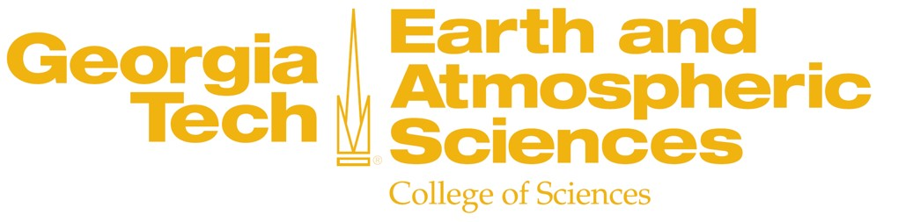

I received my Bachelor's degree in Marine Engineering from Hanoi University of Science in 2013 and a Ph.D. degree in oceanography from the School of Earth and Atmospheric Sciences, Georgia Institute of Technology in 2019.
I am currently working at the University of California, Los Angeles (UCLA) in the Department of Atmospheric and Oceanic Sciences .
Before coming to UCLA, I was a postdoctoral researcher at LOCEAN, ISPL at Sorbonne University in Paris, France.
Please click the link here (YouTube) to listen to me talking about my Ph.D. work on processes controlling the ocean iron cycling. Biological processes control the ocean iron distribution
Please click the link here (YouTube) to listen to me discussing the interaction of bacteria and iron in the ocean. The interaction of heterotrophic bacteria and iron in the global ocean
Please click the link here (YouTube) to listen to me discussing the role of zooplankton on ocean iron cycling Zooplankton demand modulates iron recycling flux and microbial iron consumption in the ocean
Please click the link here (YouTube) for my teaching sample. Introduction to Ocean Biogeochemical Modeling
During my Ph.D., I worked on understanding the ocean iron dynamics using ocean biogeochemistry models. By analyzing observations and performing computer simulations, I gained new insights into different mechanisms that regulate the dissolved iron patterns in various ocean basins.
During my postdoc at LOCEAN, I examined the interaction between marine organisms (bacteria and zooplankton) and the ocean cycling of iron and the sensitivity of this interaction to climate change.
At UCLA, I am studying the interplay between small-scales ocean circulation and ocean biogeochemical cycles along the US West Coast, focusing on the California Current System.
Damien P, A. Pham, D. McCoy, D. Bianchi, and J.C. McWilliams, The shelf-to-basin shuttle of iron along the Northern US West Coast, in preparation for Journal of Geophysical Research: Oceans.
Pham A and O. Aumont, Zooplankton Demand Modulates the Iron Recycling and Trophic Interactions, in preparation for Biogeosciences
Pham, A. L.-D., Aumont, O., Ratnarajah, L., & Tagliabue, A. (2022). Examining the interaction between free-living bacteria and iron in the global ocean. Global Biogeochemical Cycles, 36, e2021GB007194. https://doi.org/10.1029/2021GB007194
Pham A. and T. Ito, Biological processes control the ocean Fe distribution, in preparation.
Pham A. and T. Ito (2021), Anthropogenic iron deposition alters the ecosystem and carbon balance of the Indian Ocean over a centennial timescale, Journal of Geophysical Research: Oceans. https://doi.org/10.1029/2020JC016475.
Pham A. and T. Ito (2019), Ligand binding strength explains the distribution of iron in the North Atlantic Ocean, Geophysical Research Letters,46. https://doi.org/10.1029/2019GL083319
Pham A. and T. Ito, (2018), Formation and maintenance of the GEOTRACES subsurface dissolved iron maxima in an ocean biogeochemistry model, Global Biogeochemical. Cycles, 32. https://doi.org/10.1029/2017GB005852
Please click here for my full CV
Please click the link here (YouTube) to listen to me talking about my work on the ocean iron cycle. Biological processes control the ocean iron distribution
Please click the link here (YouTube) for my teaching sample. Introduction to Ocean Biogeochemical Modeling
Please click here for my Google Scholar page
Please click here for my ORCID page
Please click here for my Research Gate
I spend my free time visiting museums and reading fictions and philosophy books in Vietnamese, English, and just recently, in French.
Please connect with me on Twitter.